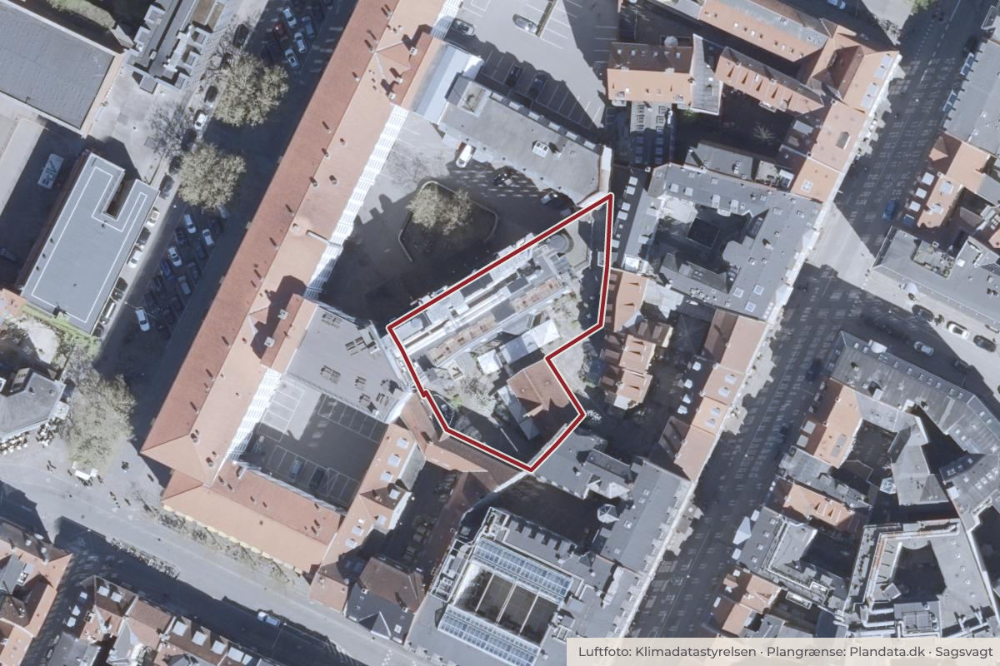

På dagsordenen 12. november, Indre By Lokaludvalg
Høringssvar om Tillæg 1 til lokalplan 445 Landgreven - forslag
KTF har den 20. oktober 2026 sendt "Tillæg 1 til lokalplan 445 Landgreven - forslag" i offentlig høring på Bliv Hørt-portalen med svarfrist den 12. november 2026. I mødet den 13. august 2026 tog lokaludvalget stilling til den interne høring om udkastet til lokalplantillægget.
Steder i sagen: Landgreven

Kort: © OpenStreetMap-bidragydere. Plangrænse: Plandata.dk, København Kommune.

Kort fortalt
- Forslaget
- Indre By Lokaludvalg bemyndiger lokaludvalgets formand Åge Staghøj til til i et høringssvar at meddele Økonomiforvaltningen, at budskaberne i lokaludvalgets svar i den interne høring vedr. udkast til "Tillæg 1 til lokalplan 445 Landgreven - forslag" også gælder for den offentlige høring.
- Hvem
- Indre By Lokaludvalg
- Hvornår
- Torsdag 12. november 2026
- Status
- På dagsordenen. Sagen behandles på mødet.
- Næste skridt
- Sekretariatet lægger lokaludvalgets høringssvar på Bliv Hørt-portalen. 0. Link til sagen på Bliv Hørt-portalen: https://blivhoert.kk.dk/hearing/327
Hvad kan du gøre?
- Mød op
- Lokaludvalgets møder er som regel åbne for alle i bydelen. Sagen behandles torsdag 12. november 2026.
Læs hele sagen Kommunens egen tekst
Indstilling
om,
• at Indre By Lokaludvalg bemyndiger lokaludvalgets formand Åge Staghøj til til i et høringssvar at meddele Økonomiforvaltningen, at budskaberne i lokaludvalgets svar i den interne høring vedr. udkast til "Tillæg 1 til lokalplan 445 Landgreven - forslag" også gælder for den offentlige høring.
Problemstilling
KTF har den 20. oktober 2026 sendt "Tillæg 1 til lokalplan 445 Landgreven - forslag" i offentlig høring på Bliv Hørt-portalen med svarfrist den 12. november 2026.
I mødet den 13. august 2026 tog lokaludvalget stilling til den interne høring om udkastet til lokalplantillægget. Se lokaludvalgets høringssvar i bilagsoversigten.
Løsning
Det foreslås, at lokaludvalget bemyndiger Åge Staghøj til i et høringssvar at meddele Økonomiforvaltningen, at budskaberne i lokaludvalgets svar i den interne høring også gælder for den offentlige høring, og lokaludvalget tager til efterretning, at en besigtigelse af ejendommen ikke er mulig.
Lokalplantillægget omfatter to bygninger i den anden baggård i ’Baron Boltens Gård’ - det fredede bindingsværkspakhus, Go-thersgade 8L, og en ombygget erhvervsbygning, Gothersgade 8F.
Tillægget ophæver en bestemmelse i den gældende Lokalplan 445 Landgreven, som begrænser anvendelsen af baghusene til boligformål. Herefter må de to baghuse anvendes som den øvrige bebyggelse i lokalplanens delområde I, nemlig til helårsboliger og serviceerhverv samt til håndværk og andre virksomheder, der naturligt kan indpasses.
Økonomi
Intet.
Videre proces
Sekretariatet lægger lokaludvalgets høringssvar på Bliv Hørt-portalen.
0. Link til sagen på Bliv Hørt-portalen:
https://blivhoert.kk.dk/hearing/327
Bilag
Kilde: Københavns Kommune, Indre By Lokaludvalg, dagsorden fra mødet torsdag 12. november 2026, punkt 17. Læs den originale sag hos kommunen.